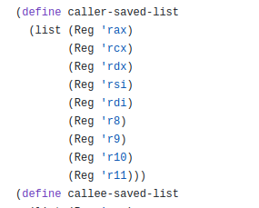

Synchronized Multi-user drawing tool
MFC
ngrok
Kubernetes
AWS S3
Redis
Fabric.js
y-webrtc
- 1Engineered a collaborative drawing platform using WebSockets for low-latency event propagation, React.js for modular UI, and Node.js + Redis for distributed state synchronization.
- 2Integrated Fabric.js for canvas rendering and y-webrtc for peer-to-peer session resilience; deployed via AWS S3 and tunneled development with ngrok.
- 3Applied MFC for client integration and Kubernetes for container orchestration to ensure horizontal scalability.
Cloud based End-to-End Digital publishing platform
Ruby on Rails
AWS EC2
AWS S3
Docker
PostgreSQL
- 1Developed a scalable content authoring and publishing system using Ruby on Rails, with AWS EC2/S3 for hosting and media storage, and Docker for containerized deployments.
- 2Implemented real-time content updates, secure user authentication, and role-based access control to support concurrent editors and readers.
- 3Optimized application performance with caching strategies and database indexing to handle high-volume traffic.

Compiler design and development using Racket
DrRacket
Github
Racket
- 1Implemented a compiler featuring lexical analysis, parsing, semantic checks, and code generation, leveraging Racket macros and parser combinators for modular syntax handling.
- 2Built an intermediate representation for optimization passes and verified correctness through extensive unit tests and benchmark programs.
- 3Profiled and refined runtime performance to reduce compilation latency.

Custom Operating System
C
GCC
GDB
- 1Designed and implemented a UNIX-style OS kernel supporting process scheduling, file systems, memory management, mutex locks, and inter-process communication (IPC).
- 2Developed a text editor and calculator as user-space applications to validate OS APIs.
- 3Utilized C, GCC, and GDB for kernel debugging, with systematic profiling to ensure stability under concurrent workloads.